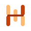

RA-01
Tight Lockup
Primary source study: the rail accent becomes a free-standing mark and sits close to a larger Sigra wordmark.

SigraSigra
32px
24px
16px
Likely strongest primary lockup.
It keeps the visual rhythm you liked while dropping the badge. The wordmark feels closer and more confident.
Risk: mark-alone use needs a controlled background because the free-standing rails are intentionally light.